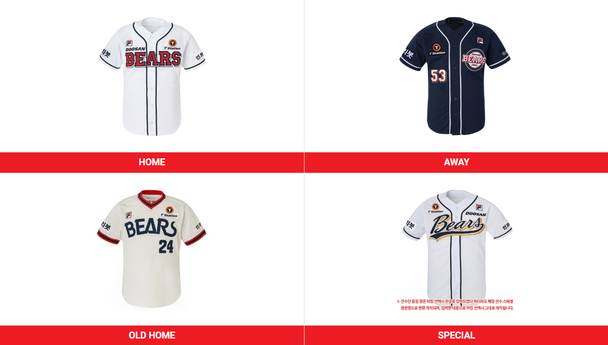

베어스의 유니폼 디자인은 원년 OB 시절부터 특유의 깔끔한 남색+흰색+빨간색의 조합으로 상당수의 야구 팬들에게 예쁘다고 인정받고 있다. 유니폼 디자인 투표를 하면 항상 1위를 차지한다고 해도 과언이 아닐 정도. 또한 하술된 내용들을 살펴보면 알 수 있지만 두산은 타 팀에 비해 자질구레한 얼트 유니폼이 많이 없으며, 유니폼 시리즈가 단출하며 유니폼 사용 기간도 꽤 긴 편이라는 것을 알 수 있다.
색깔의 경우, 남색과 흰색을 기본 바탕으로 빨간색 (OB) → 노랑색 (이하 두산, 1999~2009) → 빨간색 (2010~)의 보조색이 이어져 오고 있다. 또한 원년 구단들 중 원정 전용 하의를 1982년 창단 이래 단 한 번도 만들지 않은 유일한 팀이다. kt를 제외한 모든 구단이 원정에만 입는 하의를 입은 적이 있지만 OB-두산은 홈이나 원정이나 디자인이 동일한 흰색 하의를 착용했다.
